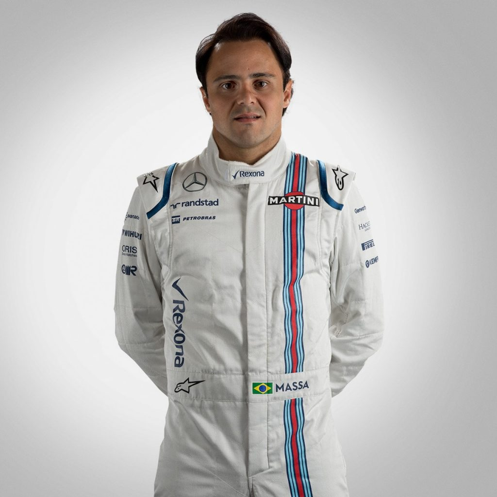

Name: Felipe Massa
Team: Williams
Career:
Felipe Massa (Portuguese pronunciation: [fiˈlipi ˈmasɐ], born 25 April 1981) is a Brazilian racing driver. He competed in 15 seasons of Formula One between 2002 and 2017, where he scored 11 Grand Prix victories, 41 podiums and finished as championship runner-up in 2008 by one point.